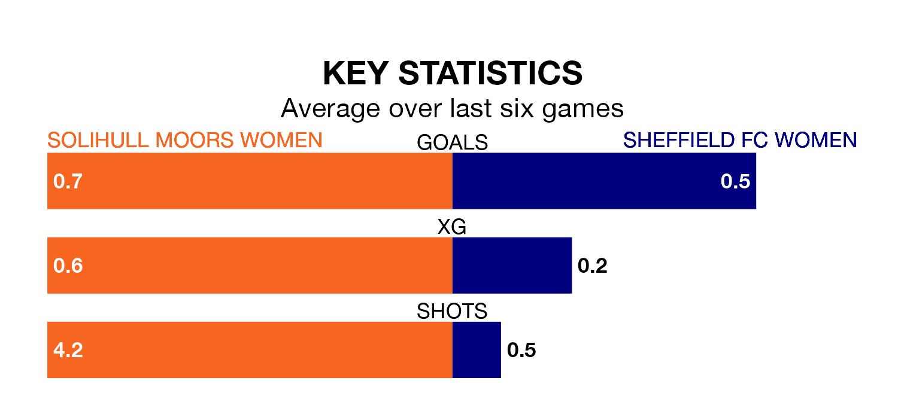

Struggling Sheffield FC Women face Solihull Moors Women away on Sunday looking to build on a win in their last league outing.
After securing all three points with a 1-0 victory over Notts County Women on January 14, Sheffield FC sit 11th in Women's National League Division One Midlands.
They travel to play a Solihull Moors side sixth in the standings, who lost in their last match, 5-0 against Sporting Khalsa Women.
Solihull Moors are in bad form in Women's National League Division One Midlands, with one win and a draw from their last six games.
With a win and two draws over that period, Sheffield FC's form is slightly better – they have taken five points from 18, compared to the hosts' four.
With six goals in 11 games so far this season, the away side are the league's lowest scorers with 0.5 goals per game. And they are conceding at an average rate, letting in 20 goals at a rate of 1.8 per game.
Solihull Moors are also below average scorers, with 1.4 goals per game, compared to a league average of 1.8. They have conceded 1.6 goals per game.
In the last three years, Solihull Moors and Sheffield FC have played each other on three occasions. Solihull Moors won one of them and Sheffield FC the other.
Their last meeting was on September 10, when Solihull Moors won 2-0 away.
Updated: 09:18 (UTC), 23/01/24